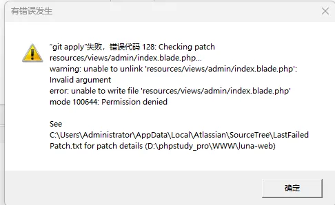
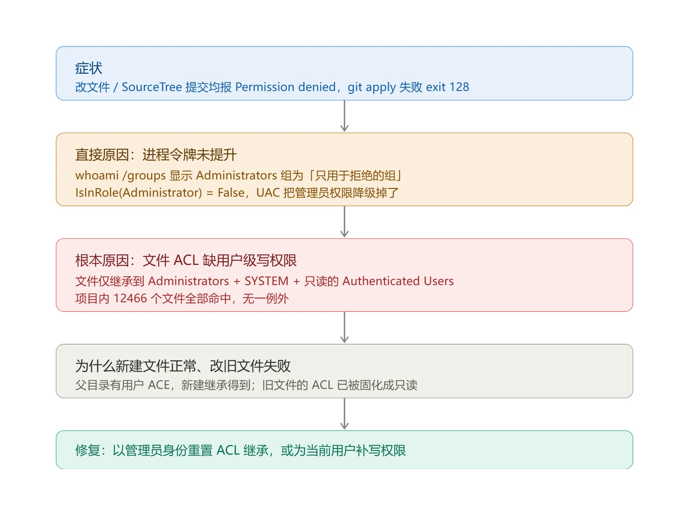

hosts位置：C:\Windows\System32\drivers\etc
SSH工具
一、常用 SSH 客户端（远程登录）
- Xshell（Windows）功能强、支持多标签、脚本、SFTP，个人 / 学生有免费版，是服务器运维最常用之一。
- SecureCRT（Windows/macOS）老牌专业 SSH 客户端，稳定、支持批量操作、脚本自动化，适合长期运维。
- FinalShell（Windows/macOS）国产免费，自带文件管理、服务器性能监控，对新手友好，功能很全。
- Termius（Windows/macOS/Linux/Android/iOS）跨平台、云同步配置，界面现代，支持多设备同步，适合多平台切换。
- MobaXterm（Windows）免费版够用，集成 SSH、SFTP、X11、多标签、命令历史，一站式工具。
- iTerm2 + ssh（macOS）macOS 终端神器，原生支持
<font style="color:rgb(0, 0, 0);background-color:rgba(0, 0, 0, 0);">ssh user@host</font>，配合 zsh、插件体验很好。 - Windows Terminal + OpenSSH（Windows 10/11）系统自带，直接在终端里用
<font style="color:rgb(0, 0, 0);background-color:rgba(0, 0, 0, 0);">ssh user@host</font>，轻量无广告，适合极简党。
二、常用 SFTP/SCP 文件传输工具
- WinSCP（Windows）图形化 SFTP/SCP，拖拽传文件，支持同步、对比，和 SSH 登录配合很方便。
- FileZilla（跨平台）支持 FTP/SFTP，免费开源，界面简单，适合日常传文件。
- Transmit（macOS）付费但体验极佳，SFTP/FTP/WebDAV 都支持，速度和稳定性都很好。
三、命令行原生 SSH（所有系统都能用）
1 | # 登录 |
四、简单推荐
- 新手 / Windows：FinalShell / MobaXterm
- 专业运维 / Windows：Xshell / SecureCRT
- macOS：iTerm2 + 原生 ssh 或 Termius
- 跨平台 / 多设备：Termius
- 只传文件：WinSCP / FileZilla
TortoiseSVN安装
一、安装 TortoiseSVN（含服务器组件）
- 下载安装包：访问 TortoiseSVN 官网，下载对应系统位数的安装包（如
<font style="color:rgb(0, 0, 0);">TortoiseSVN-1.14.6.36806-x64-svn-1.14.2.msi</font>）。 - 安装选项：
- 安装时确保勾选 “Command Line Tools”（含 svnserve.exe 等服务器工具）。
- 安装路径默认或自定义（如
<font style="color:rgb(0, 0, 0);">D:\Program Files\TortoiseSVN</font>），完成后按提示重启电脑。
二、快速搭建：创建仓库与临时启动（适合测试）
1. 创建 SVN 仓库
- 新建仓库根目录（如
<font style="color:rgb(0, 0, 0);">D:\SVN\Repos</font>），在该目录下右键 → TortoiseSVN → Create Repository here。 - 选择仓库类型：默认 “FSFS”，可勾选 “Create folder structure” 自动生成
<font style="color:rgb(0, 0, 0);">trunk/branches/tags</font>规范结构。 - 仓库创建成功后，路径为
<font style="color:rgb(0, 0, 0);">file:///D:/SVN/Repos</font>，本地测试可用；网络访问需用<font style="color:rgb(0, 0, 0);">svn://</font>协议。
2. 配置用户与权限
- 进入仓库的
<font style="color:rgba(0, 0, 0, 0.85) !important;">conf</font>目录，修改以下 3 个文件（去掉行首<font style="color:rgba(0, 0, 0, 0.85) !important;">#</font>与空格，保持格式正确）：
| 文件名 | 关键配置 | 说明 |
|---|---|---|
| svnserve.conf | <font style="color:rgb(0, 0, 0);">anon-access = none</font><font style="color:rgb(0, 0, 0);">auth-access = write</font><font style="color:rgb(0, 0, 0);">password-db = passwd</font><font style="color:rgb(0, 0, 0);">authz-db = authz</font> |
禁用匿名访问，启用认证；指定用户 / 权限文件 |
| passwd | <font style="color:rgb(0, 0, 0);">[users]</font><font style="color:rgb(0, 0, 0);">dev01 = 123456</font><font style="color:rgb(0, 0, 0);">test01 = 654321</font> |
添加用户（格式：用户名 = 密码） |
| authz | <font style="color:rgb(0, 0, 0);">[groups]</font><font style="color:rgb(0, 0, 0);">developers = dev01</font><font style="color:rgb(0, 0, 0);">testers = test01</font><font style="color:rgb(0, 0, 0);">[/]</font><font style="color:rgb(0, 0, 0);">@developers = rw</font><font style="color:rgb(0, 0, 0);">@testers = r</font> |
创建用户组，配置根目录权限（rw = 读写，r = 只读） |
3. 临时启动服务器
- 打开命令提示符（管理员），执行：bash运行
1 | "D:\Program Files\TortoiseSVN\bin\svnserve.exe" -d -r D:\SVN\Repos |
<font style="color:rgb(0, 0, 0);">-d</font>：后台守护进程模式；<font style="color:rgb(0, 0, 0);">-r</font>：指定仓库根目录，客户端访问路径简化为<font style="color:rgb(0, 0, 0);">svn://服务器IP/仓库名</font>。- 测试访问：本地输入
<font style="color:rgb(0, 0, 0);">svn://localhost/</font>，或局域网<font style="color:rgb(0, 0, 0);">svn://192.168.1.100/</font>，用配置的用户登录。
三、生产环境：注册为 Windows 系统服务（开机自启）
1. 注册服务（管理员 CMD）
- 执行以下命令（路径需与实际安装一致）：
1 | sc create TortoiseSVN-Server binPath= "\"D:\Program Files\TortoiseSVN\bin\svnserve.exe\" --service -r D:\SVN\Repos" displayname= "TortoiseSVN Server" depend= TCPIP start= auto |
- 参数说明：
<font style="color:rgb(0, 0, 0);">binPath</font>：服务执行路径（含<font style="color:rgb(0, 0, 0);">--service</font>以服务模式运行）；<font style="color:rgb(0, 0, 0);">displayname</font>：服务显示名称；<font style="color:rgb(0, 0, 0);">depend=TCPIP</font>：依赖 TCP/IP 服务；<font style="color:rgb(0, 0, 0);">start=auto</font>：开机自动启动。
2. 管理服务
- 启动服务：
<font style="color:rgb(0, 0, 0);">net start TortoiseSVN-Server</font>； - 停止服务：
<font style="color:rgb(0, 0, 0);">net stop TortoiseSVN-Server</font>； - 查看 / 修改：运行
<font style="color:rgb(0, 0, 0);">services.msc</font>，找到 “TortoiseSVN Server”，可调整启动类型或手动启停。
四、客户端操作（检出 / 提交 / 更新）
- 检出仓库：
- 新建空文件夹（如
<font style="color:rgb(0, 0, 0);">D:\Work\MyProject</font>），右键 → SVN Checkout； - URL 输入
<font style="color:rgb(0, 0, 0);">svn://服务器IP/仓库名</font>（如<font style="color:rgb(0, 0, 0);">svn://192.168.1.100/MyProject</font>），点击 “OK” 并输入用户名密码。
- 提交修改：
- 修改文件后，右键 → SVN Commit，填写提交备注，点击 “OK” 完成提交。
- 更新代码：
- 右键工作副本 → SVN Update，获取服务器最新版本。
五、常见问题与排查
- 端口占用：svnserve 默认监听 3690 端口，若冲突可在启动时指定端口（如
<font style="color:rgb(0, 0, 0);">-d -r D:\SVN\Repos --listen-port 3691</font>），客户端访问需加端口（<font style="color:rgb(0, 0, 0);">svn://IP:3691/仓库名</font>）。 - 权限报错：检查
<font style="color:rgb(0, 0, 0);">authz</font>文件中用户 / 组权限配置是否正确，路径是否匹配（如<font style="color:rgb(0, 0, 0);">[/]</font>为根目录权限）。 - 防火墙拦截：开放 3690 端口（入站规则），确保客户端与服务器网络互通。
六、对比与建议
| 方案 | 优点 | 缺点 | 适用场景 |
|---|---|---|---|
| TortoiseSVN + svnserve | 轻量、无需额外安装、配置简单 | 无可视化管理、权限功能基础 | 个人 / 小型团队、临时测试 |
| VisualSVN Server | 可视化管理、支持 HTTPS、权限精细 | 独立安装、功能冗余 | 企业 / 长期使用、安全性要求高 |
七、总结
通过 TortoiseSVN 的 svnserve 可快速搭建轻量 SVN 服务器，临时测试用命令行启动，生产环境建议注册为系统服务。若需更完善的管理功能，可搭配 VisualSVN Server 使用。
VisualSVN
在 Windows 系统中安装 SVN Server（Subversion 服务器），推荐使用 VisualSVN Server（官方维护的 Windows 专用版本，集成了 Apache 服务，配置简单、稳定易用）。
一、准备工作
- 系统要求：Windows 7/8/10/11 或 Windows Server 2008+（32/64 位均可）。
- 下载安装包：访问 VisualSVN Server 官方下载页：https://www.visualsvn.com/server/download/选择对应系统位数的安装包（默认推荐 64 位，如
<font style="color:rgb(0, 0, 0);">VisualSVN-Server-5.1.9-x64.msi</font>，版本号可能更新）。
二、安装 VisualSVN Server
- 双击下载的
<font style="color:rgb(0, 0, 0);">.msi</font>安装包，启动安装向导，点击「Next」。 - 勾选「I accept the terms in the license agreement」，点击「Next」。
- 选择安装类型：
- 推荐「Standard Edition」（免费版，满足个人 / 小型团队需求）；
- 企业级需求可选择「Enterprise Edition」（需付费），此处选免费版，点击「Next」。
- 配置安装路径和仓库路径：
<font style="color:rgb(0, 0, 0);">VisualSVN Server installation directory</font>：SVN 服务程序安装路径（默认即可，如<font style="color:rgb(0, 0, 0);">C:\Program Files\VisualSVN Server</font>）；<font style="color:rgb(0, 0, 0);">Repositories directory</font>：SVN 仓库存储路径（建议自定义到非系统盘，如<font style="color:rgb(0, 0, 0);">D:\SVN\Repositories</font>，避免系统盘空间不足）；点击「Next」。
- 配置服务和端口：
- 勾选「Run VisualSVN Server as a service」（以系统服务运行，开机自启）；
- 端口选择：默认
<font style="color:rgb(0, 0, 0);">HTTPS 443</font>（推荐，加密传输），若 443 端口被占用（如 IIS、微信等），可修改为其他端口（如 8443）； - 可选勾选「Allow anonymous read access」（允许匿名只读访问，根据需求选择，默认不勾选）；点击「Next」。
- 点击「Install」开始安装，等待进度完成后点击「Finish」，安装完成。
三、初始化配置（创建仓库、用户、权限）
安装完成后，会自动启动「VisualSVN Server Manager」（可视化管理工具），后续配置均通过该工具操作。
- 创建 SVN 仓库（核心步骤）：仓库是存储项目代码的核心目录，每个项目建议创建独立仓库。
- 右键点击左侧「Repositories」→「Create New Repository」；
- 选择仓库类型：
- 「Empty repository」：空仓库（推荐，自行上传项目）；
- 「Import existing repository」：导入已有的 SVN 仓库（迁移场景用）；
- 输入仓库名称（如
<font style="color:rgb(0, 0, 0);">MyProject</font>），点击「Next」； - 权限设置：默认「No access」（后续手动配置），点击「Finish」；
- 仓库创建成功后，路径格式为
<font style="color:rgb(0, 0, 0);">svn://localhost/MyProject</font>（HTTP 协议）或<font style="color:rgb(0, 0, 0);">https://localhost/MyProject</font>（HTTPS 协议）。
- 创建用户（用于访问仓库）
- 右键点击左侧「Users」→「Create User」；
- 输入「Username」（用户名，如
<font style="color:rgb(0, 0, 0);">dev01</font>）、「Password」（密码）、「Confirm password」（确认密码），点击「OK」； - 可批量创建多个用户（如开发、测试账号）。
- 创建用户组（可选，方便权限管理）：若用户较多，可按角色创建组（如「Developers」开发组、「Testers」测试组）：
- 右键点击左侧「Groups」→「Create Group」；
- 输入组名称（如
<font style="color:rgb(0, 0, 0);">Developers</font>），点击「OK」； - 右键刚创建的组→「Properties」→「Members」→「Add」，选择需要加入组的用户，点击「OK」。
- 配置仓库权限（关键）：控制用户 / 组对仓库的读写权限：
- 右键目标仓库（如
<font style="color:rgb(0, 0, 0);">MyProject</font>）→「Properties」→「Security」； - 点击「Add」，选择需要授权的用户或组（如
<font style="color:rgb(0, 0, 0);">Developers</font>组、<font style="color:rgb(0, 0, 0);">dev01</font>用户），点击「OK」； - 为选中的用户 / 组设置权限：
- 「Read」：只读（只能拉取代码，不能提交）；
- 「Write」：读写（可拉取、提交代码）；
- 「No Access」：无权限；
- 建议给普通开发设置「Write」，给测试设置「Read」，点击「Apply」→「OK」。
四、验证 SVN Server 可用性
- 本地验证（服务器本机测试）：安装 SVN 客户端（如 TortoiseSVN，下载地址：https://tortoisesvn.net/downloads.html），然后：
- 新建一个空文件夹（如
<font style="color:rgb(0, 0, 0);">TestSVN</font>），右键该文件夹→「SVN Checkout」； - 输入仓库地址：
<font style="color:rgb(0, 0, 0);">https://localhost/MyProject</font>（或<font style="color:rgb(0, 0, 0);">https://服务器IP/MyProject</font>），点击「OK」； - 若弹出登录框，输入已创建的用户名（如
<font style="color:rgb(0, 0, 0);">dev01</font>）和密码，点击「OK」； - 若 checkout 成功（文件夹中生成
<font style="color:rgb(0, 0, 0);">.svn</font>隐藏目录），说明服务器配置正常。
- 局域网验证（其他电脑测试）：确保客户端电脑与 SVN 服务器在同一局域网，且服务器防火墙开放了 SVN 端口（默认 443 或自定义端口）：
- 在客户端电脑上，按上述「本地验证」步骤，将仓库地址改为
<font style="color:rgb(0, 0, 0);">https://SVN服务器IP/MyProject</font>（如<font style="color:rgb(0, 0, 0);">https://192.168.1.100/MyProject</font>）； - 输入用户名密码，若能正常 checkout/commit，说明局域网访问正常。
五、常见问题解决
- 端口被占用：安装时若提示 443 端口被占用，可在安装步骤 5 中修改为其他端口（如 8443），后续访问地址需加上端口（如
<font style="color:rgb(0, 0, 0);">https://localhost:8443/MyProject</font>）。 - 防火墙拦截：客户端无法连接时，检查服务器防火墙是否开放了 SVN 端口（如 443）：
- 控制面板→系统和安全→Windows Defender 防火墙→高级设置→入站规则→新建规则→端口→TCP→特定本地端口（如 443）→允许连接→下一步完成。
- 权限不足：提交代码时提示「Access denied」，检查仓库的「Security」配置，确保用户 / 组有「Write」权限。
- HTTPS 证书警告：首次访问时可能弹出证书警告，选择「永久接受」即可（免费版证书为自签名，不影响使用）。
六、进阶操作（可选）
- 创建仓库结构：checkout 仓库后，可在本地创建
<font style="color:rgb(0, 0, 0);">trunk</font>（主干）、<font style="color:rgb(0, 0, 0);">branches</font>（分支）、<font style="color:rgb(0, 0, 0);">tags</font>（标签）目录，提交到服务器，规范项目结构。 - 备份仓库：右键仓库→「Backup Repository」，选择备份路径，定期备份避免数据丢失。
- 查看日志：在 VisualSVN Server Manager 中，选中仓库→「Show Log」，可查看所有提交记录（作者、时间、备注等）。
七、对比与建议
| 方案 | 优点 | 缺点 | 适用场景 |
|---|---|---|---|
| TortoiseSVN + svnserve | 轻量、无需额外安装、配置简单 | 无可视化管理、权限功能基础 | 个人 / 小型团队、临时测试 |
| VisualSVN Server | 可视化管理、支持 HTTPS、权限精细 | 独立安装、功能冗余 | 企业 / 长期使用、安全性要求高 |
C盘清理
一、方法
- 开启“存储感知”自动清理
- 清理步骤：打开【设置】→【系统】→【存储】，开启“存储感知”功能，设置每周自动清理临时文件、回收站内容等。
- 手动运行“磁盘清理”
- 右键点击C盘→【属性】→【磁盘清理】→勾选“临时文件”、“回收站”、“Windows更新清理”等→点击“清理系统文件”后勾选“以前的Windows安装”（Windows.old文件夹，可释放10-30GB）→确认删除。
- 关闭休眠文件（适合不用休眠功能的电脑）
- 以管理员身份打开命令提示符（Win+X→Windows终端管理员）→输入powercfg-hoff回车。立即释放等同于内存大小的空间（如16GB内存可省16GB）。
- 清理临时文件夹
- 按Win+R输入%temp%→全选文件（Ctrl+A）→按Shift+Delete彻底删除（跳过正在使用的文件）。
- 转移大型软件缓存
- 微信/QQ：进入设置→文件管理→将存储路径改为D盘等。
- 浏览器：定期清理缓存（Chrome/Edge：设置→隐私与安全→清除浏览数据）。
- 搬移用户文件夹（桌面/文档/下载）
- 打开文件资源管理器→右键“桌面”文件夹→【属性】→【位置】→点击“移动”→选择D盘等目标位置→确认迁移。其他文件夹（文档、下载等）同理操作。
- 也可以直接使用金舟Windows优化大师的“大文件搬家”，一键清理搬迁c盘大文件到其他物理盘。
- 第三方清理工具
- 打开【金舟Windows优化大师】→【c盘瘦身】→【勾选想要清理的文件】→【一键清理】。
- 修改新文件默认保存位置
- 打开【设置】→【系统】→【存储】→点击“更改新内容的保存位置”→将“文档”“图片”等默认路径改为D盘。
- 软件安装必改路径：装软件时手动选择“自定义安装”，目标路径改为D盘。
- 缩小虚拟内存（内存≥16GB适用）
- 右键“此电脑”→【属性】→【高级系统设置】→【高级】→性能“设置”→【高级】→虚拟内存“更改”→取消“自动管理”→选C盘→设置为“无分页文件”→选D盘→勾选“系统管理的大小”→重启生效。
- 压缩不常用系统文件夹（应急用）
- 右键C盘→【属性】→勾选“压缩此驱动器以节省磁盘空间”（注意：可能轻微影响性能，SSD慎用）。
更改账户
- Win+R
- regedit
- 删除
- HKEY_CURRENT_USER\Software\Microsoft\IdentityCRL\UserExtendedProperties\xxx@xx.com
- HKEY_USERS.DEFAULT\Software\Microsoft\IdentityCRL\StoredIdentities\xxx@xx.com
- 注销账户
- regedit
- 删除
- HKEY_CURRENT_USER\Software\Microsoft\IdentityCRL
- HKEY_USERS.DEFAULT\Software\Microsoft\IdentityCRL
- 注销账户
- 设置->电子邮件和账户，删除
IIS部署PHP
一、前期准备：安装 IIS 服务（若未安装）
- 打开服务器的「控制面板」→「程序」→「程序和功能」→ 左侧点击「启用或关闭 Windows 功能」。
- 在弹出的窗口中，展开「Internet Information Services」，至少勾选以下核心组件：
- Web 管理工具：IIS 管理控制台
- World Wide Web 服务：
- 应用程序开发功能：CGI（关键，用于 PHP 解析）
- 常见 HTTP 功能：默认文档、目录浏览、静态内容
- 安全性：请求筛选
- 点击「确定」，等待系统安装并启用 IIS 服务，完成后可通过访问
<font style="color:rgb(0, 0, 0);">http://localhost</font>验证 IIS 默认页面是否正常显示。
二、安装 PHP 运行环境
- 下载 PHP 安装包访问 PHP 官方下载地址（https://windows.php.net/download/），选择对应版本（推荐稳定版，如 PHP 7.4/8.1/8.2），注意：
- 必须选择「Non Thread Safe (NTS)」版本（IIS 搭配 FastCGI 运行，优先 NTS 版，性能更优）
- 根据服务器系统位数选择 x64（主流服务器均为 64 位）
- 下载「Zip」压缩包（便携版，便于配置）。
- 解压并配置 PHP
- 将下载的 PHP 压缩包解压到指定目录（建议无中文、无空格路径，如
<font style="color:rgb(0, 0, 0);">D:\PHP</font>）。 - 进入 PHP 解压目录，找到
<font style="color:rgb(0, 0, 0);">php.ini-development</font>（开发环境）或<font style="color:rgb(0, 0, 0);">php.ini-production</font>（生产环境），复制一份并重命名为<font style="color:rgb(0, 0, 0);">php.ini</font>（核心配置文件）。 - 编辑
<font style="color:rgb(0, 0, 0);">php.ini</font>文件，修改以下关键配置（按需调整）：ini
- 将下载的 PHP 压缩包解压到指定目录（建议无中文、无空格路径，如
1 | ; 开启扩展目录（去掉前面的分号） |
三、配置 IIS 与 PHP 的关联（FastCGI 映射）
这是实现 IIS 解析 PHP 文件的核心步骤，有两种配置方式，推荐图形界面操作（更直观）：
方式 1：图形界面配置（IIS 管理器）
- 打开「IIS 管理器」（可通过服务器管理器→工具→IIS 管理器，或运行
<font style="color:rgb(0, 0, 0);">inetmgr</font>命令快速打开）。 - 在左侧连接面板中，选中服务器名称（全局生效，所有网站均可使用 PHP 解析），或单独选中某个网站（仅该网站生效）。
- 在中间功能视图中，找到并双击「处理程序映射」。
- 在处理程序映射右侧「操作」面板中，点击「添加模块映射」，填写以下信息：
- 请求路径：
<font style="color:rgb(0, 0, 0);">*.php</font>（表示所有 php 后缀文件均通过该映射解析） - 模块：下拉选择「FastCgiModule」（核心模块，实现 PHP 快速解析）
- 可执行文件：点击「浏览」，选择 PHP 解压目录下的
<font style="color:rgb(0, 0, 0);">php-cgi.exe</font>（如<font style="color:rgb(0, 0, 0);">D:\PHP\php-cgi.exe</font>） - 名称：自定义命名（如「PHP-v8.1 FastCGI」）
- 请求路径：
- 点击「确定」，弹出「是否添加对应的 FastCGI 应用程序」提示，选择「是」，完成映射配置。
方式 2：命令行配置（可选，适合批量部署）
以管理员身份打开「命令提示符（CMD）」，执行以下命令（替换对应路径）：
bash
运行
1 | %windir%\system32\inetsrv\appcmd set config /section:system.webServer/fastCgi /+[fullPath='D:\PHP\php-cgi.exe',monitorChangesTo='php.ini',idleTimeout='300',activityTimeout='300',requestTimeout='300'] |
四、配置 IIS 网站（发布 PHP 项目）
- 准备项目文件将 PHP 项目的所有文件（如 ThinkPHP、Laravel、WordPress 等项目目录）复制到服务器指定目录（建议无中文、无空格，如
<font style="color:rgba(0, 0, 0, 0.85) !important;">D:\PHP_Projects\my_project</font>）。 - 创建 / 配置 IIS 网站
- 打开 IIS 管理器，左侧选中「网站」，右侧点击「添加网站」。
- 填写网站配置信息：
- 网站名称：自定义（如「MyPHPProject」）
- 物理路径：选择步骤 1 中项目文件所在目录（如
<font style="color:rgb(0, 0, 0);">D:\PHP_Projects\my_project</font>） - 绑定信息：
- 类型：http（默认，若需 HTTPS 需配置 SSL 证书）
- IP 地址：选择「全部未分配」或指定服务器 IP
- 端口：默认 80（若占用可修改为其他端口，如 8080）
- 主机名：若需域名访问，填写对应域名（如
<font style="color:rgb(0, 0, 0);">www.myphp.com</font>，需提前配置 DNS 解析）
- 点击「确定」，完成网站创建。
- 配置网站权限（关键，避免权限不足报错）
- 找到项目物理路径目录（如
<font style="color:rgb(0, 0, 0);">D:\PHP_Projects\my_project</font>），右键→「属性」→「安全」选项卡。 - 点击「编辑」→「添加」，在弹出的窗口中输入
<font style="color:rgb(0, 0, 0);">IIS_IUSRS</font>（IIS 内置访问用户组），点击「检查名称」→「确定」。 - 选中添加的「IIS_IUSRS」用户组，在下方权限列表中，勾选「读取」、「写入」（若项目需要上传文件、生成日志等操作，必须勾选写入权限）、「列出文件夹目录」，点击「确定」保存。
- （可选）若权限仍不足，可添加「Everyone」用户组并分配对应权限（生产环境不推荐，优先使用 IIS_IUSRS）。
- 找到项目物理路径目录（如
- 配置默认文档（实现访问域名直接打开首页）
- 在 IIS 管理器中，选中创建的 PHP 网站，中间功能视图双击「默认文档」。
- 右侧点击「添加」，输入 PHP 项目的首页文件名（如
<font style="color:rgb(0, 0, 0);">index.php</font>、<font style="color:rgb(0, 0, 0);">index.html</font>、<font style="color:rgb(0, 0, 0);">default.php</font>等），并可通过「上移」按钮将其调整为优先匹配项。 - 按需删除不需要的默认文档（如
<font style="color:rgb(0, 0, 0);">Default.htm</font>、<font style="color:rgb(0, 0, 0);">Default.asp</font>等），点击「确定」。
五、验证部署是否成功
- 快速验证 PHP 解析在项目物理路径目录下，新建一个
<font style="color:rgb(0, 0, 0);">phpinfo.php</font>文件，内容如下：php运行
1 |
|
- 访问测试打开浏览器，访问对应地址（根据网站绑定配置）：
- 若端口 80、无主机名：
<font style="color:rgb(0, 0, 0);">http://服务器IP/phpinfo.php</font> - 若端口 8080：
<font style="color:rgb(0, 0, 0);">http://服务器IP:8080/phpinfo.php</font> - 若配置域名：
<font style="color:rgb(0, 0, 0);">http://www.myphp.com/phpinfo.php</font>
- 若端口 80、无主机名：
- 若页面正常显示 PHP 的版本、配置、扩展等信息，说明 PHP 解析配置成功；随后可删除
<font style="color:rgb(0, 0, 0);">phpinfo.php</font>文件（避免泄露服务器环境信息），直接访问网站域名 / IP，验证项目是否正常运行。
六、常见问题排查
- 访问 PHP 文件提示「404 未找到」：检查网站物理路径是否正确、文件是否存在、处理程序映射是否配置
<font style="color:rgb(0, 0, 0);">*.php</font>。 - 访问 PHP 文件提示「500 内部服务器错误」：检查
<font style="color:rgb(0, 0, 0);">php.ini</font>配置是否有误（如扩展开启失败）、项目文件权限是否不足、PHP 版本与项目是否兼容。 - 无法上传文件：检查
<font style="color:rgb(0, 0, 0);">php.ini</font>中上传相关配置（<font style="color:rgb(0, 0, 0);">upload_max_filesize</font>）、项目目录写入权限是否开启、IIS 请求筛选是否限制了文件大小。
总结
- 核心流程：安装 IIS（勾选 CGI 组件）→ 安装配置 PHP（NTS 版 + php.ini）→ 配置 IIS FastCGI 映射（关联 php-cgi.exe）→ 部署 PHP 项目（配置网站 + 权限 + 默认文档）→ 验证测试。
- 关键要点：PHP 需选 NTS 版、必须配置 FastCGI 映射、项目目录需给 IIS_IUSRS 写入权限、默认文档需添加 index.php。
- 验证标准：phpinfo.php 正常显示环境信息，项目可正常访问无报错。
IIS开机启动
一、设置
- CMD方式-以管理运行
- net stop w3svc
- net stop was
- sc config w3svc start= disabled
- sc config was start= disabled
- net stop w3svc && sc config w3svc start=disabled && net stop was && sc config was start=disabled
- powershell方式
- Stop-Service W3SVC -Force
- Set-Service W3SVC -StartupType Disabled
- Stop-Service WAS -Force
- Set-Service WAS -StartupType Disabled
- 图形界面形式
IIS伪静态
一、前提准备：安装 URL 重写模块（URL Rewrite）
IIS 默认未自带 URL 重写功能，需先手动安装该模块，推荐两种安装方式：
- 方式 1：通过 Web 平台安装程序（Web PI，推荐）
- 下载 Web 平台安装程序：访问微软官网下载 Microsoft Web Platform Installer
- 安装后打开 Web PI，在搜索框中输入「URL Rewrite」，找到「URL Rewrite 2.0」（稳定版），点击「添加」→「安装」，按照提示完成部署（自动适配 IIS 10.0）。
- 方式 2：手动下载安装包
- 访问微软官网下载对应版本：URL Rewrite 模块下载页-亲测有效
- 选择与服务器系统位数（x64）匹配的安装包，双击运行，按照向导下一步完成安装（安装后需重启 IIS 生效，可通过
<font style="color:rgb(0, 0, 0);">inetmgr</font>重新打开 IIS 管理器验证）。
- 验证模块是否安装成功：打开 IIS 管理器，选中对应网站，在中间功能视图中若能找到「URL 重写」（图标为齿轮 + 箭头样式），说明安装成功。
二、配置伪静态的两种核心方式
方式 1：图形界面配置（IIS 管理器可视化操作，直观易懂，推荐新手）
- 打开 IIS 管理器，左侧连接面板中选中需要配置伪静态的目标 PHP 网站（如之前创建的 MyPHPProject）。
- 在中间功能视图中，双击「URL 重写」，进入 URL 重写配置界面。
- 创建空白规则（自定义伪静态规则）
- 在右侧「操作」面板中，点击「添加规则 (S)…」。
- 在弹出的「添加规则」窗口中，选择「空白规则」（位于「入站规则」分类下），点击「确定」。
- 配置规则核心参数（以 ThinkPHP 项目隐藏 index.php 为例，关键配置）
- 「名称」：自定义规则名称（如「ThinkPHP_Pseudo_Static」）。
- 「匹配 URL」区域：
- 请求的 URL：选择「与模式匹配」
- 使用：选择「正则表达式」（伪静态规则常用匹配方式）
- 模式：输入伪静态匹配规则（示例：
<font style="color:rgb(0, 0, 0);">^(.*)$</font>，表示匹配所有 URL 请求） - 忽略大小写：勾选（推荐，避免 URL 大小写敏感问题）
- 「条件」区域：
- 点击「添加条件 (C)…」，配置条件规则（排除真实文件和目录，避免静态资源被重写）：
- 条件输入：选择「{REQUEST_FILENAME}」
- 检查输入是否：选择「不是一个文件」
- 点击「确定」
- 再次点击「添加条件 (C)…」，添加第二个条件：
- 条件输入：选择「{REQUEST_FILENAME}」
- 检查输入是否：选择「不是一个目录」
- 点击「确定」
- 点击「添加条件 (C)…」，配置条件规则（排除真实文件和目录，避免静态资源被重写）：
- 「操作」区域：
- 操作类型：选择「重写」（核心操作，实现 URL 重写）
- 重写 URL：输入真实的访问路径（示例：
<font style="color:rgb(0, 0, 0);">index.php/{R:1}</font>，{R:1} 表示匹配到的 URL 分组内容，对应 ThinkPHP 的 URL 重写需求） - 追加查询字符串：勾选（保留 URL 中的查询参数，如
<font style="color:rgb(0, 0, 0);">?id=1</font>） - 停止处理后续规则：勾选（避免当前规则执行后触发其他无关规则）
- 点击右侧「操作」面板中的「应用」，完成单个伪静态规则配置。
- 若需多个伪静态规则，重复步骤 3-5 即可，规则按配置顺序优先级执行。
方式 2：配置 web.config 文件（推荐生产环境 / 批量部署，高效便捷）
IIS 的伪静态规则最终会保存到网站根目录的<font style="color:rgba(0, 0, 0, 0.85) !important;">web.config</font>文件中（XML 格式），可直接创建 / 编辑该文件实现伪静态配置，无需图形界面操作。
- 进入 PHP 项目的根目录（即 IIS 网站配置的物理路径，如
<font style="color:rgb(0, 0, 0);">D:\PHP_Projects\my_project</font>）。 - 创建 / 编辑 web.config 文件
- 若目录中无 web.config 文件，右键→「新建」→「文本文档」，重命名为
<font style="color:rgb(0, 0, 0);">web.config</font>（注意：后缀名必须是.config，删除.txt 后缀）。 - 用记事本或编辑器打开 web.config，写入对应伪静态规则（XML 格式），保存即可（IIS 会自动识别生效，无需额外配置）。
- 若目录中无 web.config 文件，右键→「新建」→「文本文档」，重命名为
- 常见 PHP 项目伪静态规则示例
- 示例 1：ThinkPHP 5/6 伪静态（隐藏 index.php）xml
1 |
|
- <font style="color:rgb(0, 0, 0);">示例 2：Laravel 项目伪静态（隐藏 public/index.php，推荐将项目根目录指向 public，或使用以下规则）</font>**<font style="color:rgba(0, 0, 0, 0.85);">xml</font>**1 |
|
- <font style="color:rgb(0, 0, 0);">示例 3：WordPress 伪静态（固定链接美化）</font>**<font style="color:rgba(0, 0, 0, 0.85);">xml</font>**1 |
|
三、关键注意事项
- 规则优先级：web.config 中的规则按从上到下的顺序执行，
<font style="color:rgb(0, 0, 0);">stopProcessing="true"</font>表示当前规则匹配成功后，不再执行后续规则。 - 条件配置：务必添加「排除真实文件 / 目录」的条件（
<font style="color:rgb(0, 0, 0);">negate="true"</font>表示 “否”），否则图片、CSS、JS 等静态资源会被错误重写，导致项目样式 / 资源加载失败。 - 权限问题：web.config 文件需要给「IIS_IUSRS」用户组分配读取权限（与 PHP 项目目录权限配置一致），否则 IIS 无法读取伪静态规则。
- 生效验证：配置完成后，直接访问美化后的 URL（如 ThinkPHP 项目中，原本需访问
<font style="color:rgb(0, 0, 0);">http://服务器IP/index.php/index/index</font>，配置后可直接访问<font style="color:rgb(0, 0, 0);">http://服务器IP/index/index</font>），若能正常访问，说明伪静态配置成功。 - 规则调试：若伪静态不生效，可在 IIS 管理器的「URL 重写」界面中，点击右侧「查看重写日志」，通过日志排查规则匹配失败的原因。
总结
- IIS 伪静态的核心是「URL Rewrite 2.0」模块，必须先安装该模块才能实现重写功能；
- 两种配置方式：图形界面（新手友好，可视化操作）、web.config 文件（高效便捷，适合生产环境 / 批量部署）；
- 关键配置：匹配规则（正则表达式）、排除真实文件 / 目录的条件、重写操作（指向真实入口文件）；
- 常见 PHP 框架（ThinkPHP/Laravel/WordPress）均有成熟的 web.config 伪静态规则，可直接复用并按需微调。
Laragon
一、Laragon 下载（推荐Full完整版，内置Apache/Nginx/MySQL/Redis）
- 官网地址：https://laragon.org/download/
- 两个版本选择：
- Laragon Full（推荐）：自带MySQL、Redis、Node.js，开箱即用，适合PHP开发
- Laragon Portable：绿色免安装，可放U盘，功能一致
二、安装步骤（Win11避坑重点）
- 双击安装包，安装路径必须纯英文、无空格、无中文
推荐路径：D:\laragon禁止D:\软件\laragon、D:\laragon 开发 - 安装初始语言选English（避免乱码），安装完成后再切换中文
- 关键勾选：
- ✅ Auto virtual hosts（自动虚拟域名，核心功能）
- Run Laragon when Windows starts（按需勾选开机自启）
- 一路Next完成安装，启动Laragon主界面
- 切换中文界面：
右上角齿轮【设置】→ 常规 → 语言：ChineseSimplified→ 确定重启软件
三、基础服务启停与访问
- 点击【启动所有】，自动开启Apache(80)/MySQL(3306)
- 【网站】按钮打开默认首页
http://localhost - 【数据库】一键打开phpMyAdmin，默认账号：root，密码为空
- 【根目录】快速打开项目存放文件夹
laragon/www
四、核心功能：添加/切换多PHP版本（解决你多项目版本不一致需求）
方式1：一键快速添加（推荐新版Laragon）
- 托盘右键Laragon菜单 → Tools → Quick add
- 列表直接勾选 PHP7.4 / PHP8.0 / PHP8.1 / PHP8.2 / PHP8.3，自动下载解压配置
方式2：手动添加离线PHP包（老版本/特殊版本）
1. 下载对应PHP（关键：必须选TS x64版本）
下载地址：https://windows.php.net/downloads/releases/archives/
命名规则示例：php-7.4.33-Win32-vc15-x64.zip
- TS = Thread Safe（Laragon专用，NTS会报错）
- x64：64位系统通用
2. 放置目录
解压整个文件夹到 D:\laragon\bin\php\
目录结构示例：
1 | laragon/ |
3. 一键切换版本
托盘右键Laragon → PHP → 版本 → 选择你要的PHP
切换后自动重启Apache/Nginx，无需改任何配置
五、自动虚拟域名（不用改hosts，开发神器）
使用规则
项目文件夹放入 www 下，文件夹名即为域名 文件夹名.test
示例：
- 项目目录：
www/tp6-admin→ 访问地址：http://tp6-admin.test - FastAdmin项目：
www/fastadmin→http://fastadmin.test
自定义域名后缀
设置 → 常规 → 主机名：可把 .test 改成 .local / .io
六、适配ThinkPHP6 / FastAdmin 必备配置
1. Nginx伪静态（解决404路由失效）
托盘菜单 → Nginx → 伪静态 → ThinkPHP5/6（一键生成规则）
手动规则备份（Nginx）：
1 | location / { |
2. Apache伪静态
项目根目录新建 .htaccess
1 | <IfModule mod_rewrite.c> |
3. 关闭open_basedir限制（上传/文件缓存报错）
托盘右键 → PHP → php.ini，找到 open_basedir 整行注释掉（加;）
七、常用扩展一键开启（Redis、Fileinfo、GD等）
托盘右键 → PHP → 扩展
直接勾选：redis、gd2、fileinfo、curl、mbstring、pdo_mysql，自动生效无需重启
八、Composer 全局配置（Laragon自带）
- 托盘菜单 → Terminal 打开终端，自带全局php环境
- 配置阿里云镜像（解决下载慢）
1 | composer config -g repo.packagist composer https://mirrors.aliyun.com/composer/ |
- 切换PHP版本后，终端php自动同步当前选中版本
九、Win11常见踩坑解决
- 80端口被占用（迅雷/QQ/系统IIS）
设置 → 服务&端口，把Apache端口改成8080，Nginx改成8081 - 切换PHP报错缺少VC运行库
下载对应VC++ Redist：php7.x=VC15，php8.x=VS16 - 访问.test域名打不开
关闭代理/加速器，Laragon自动写入hosts，重启软件即可 - FastAdmin上传报错
php.ini调大upload_max_filesize=20Mpost_max_size=30M - 多PHP扩展冲突
每个PHP版本独立ext文件夹，互不干扰，切换版本自动加载对应扩展
十、对比phpStudy核心优势
- 无广告、无捆绑后台，轻量化占用内存极低
- 纯绿色目录，卸载直接删除文件夹，不污染注册表
- 一键切换PHP/Nginx/Apache/MySQL多版本，零配置虚拟主机
- 自动SSL证书、一键伪静态、内置终端、phpMyAdmin
- 完美兼容ThinkPHP、FastAdmin、Laravel、WordPress等所有PHP项目
VGA/DVI/HDMI/DP
SSD/HDD硬盘
arm64和amd64
一、对比
二、查看
- 方式一：Win+r，echo %PROCESSOR_ARCHITECTURE%
- 方式二：Win+i，系统-》关于-》设备规格-》系统类型
- 64位操作系统，基于x64的处理器 → 下载 amd64
- 64位操作系统，基于ARM的处理器 → 下载 arm64
文件系统：ext4/FAT32/NTFS/exFAT/APFS
权限问题
- 使用编辑器或sourcetree改动文件时报错

- 分析

- 修复脚本：fix-permissions.ps1，右键-》以管理员身份运行或先以管理员运行powershell，再./fix-persmissins.ps.1
1 | <# |
NSSM
常用操作
基于图形化界面删除时提示：操作无法完成，因为该文件夹已在xxx中打开
- del /f www.7z
禁用IPv6
- Get-NetAdapter | Disable-NetAdapterBinding -ComponentID ms_tcpip6
- Get-NetAdapterBinding -ComponentID ms_tcpip6
- Get-NetAdapter | Enable-NetAdapterBinding -ComponentID ms_tcpip6
清理游戏资源：C:\Users\Administrator\AppData\LocalLow
查看进程信息：Get-Process -Id 48932
hosts文件位置：C:\Windows\System32\drivers\etc
刷新dns：ipconfig /flushdns
脚本没办法运行，参考
- 以管理员身份运行：Set-ExecutionPolicy -ExecutionPolicy Bypass
git添加安全目录
- git config –global –add safe.directory D:/phpstudy_pro/WWW/some_code_dir
- git config –global –list
github拉取代码：OpenSSL SSL_read: SSL_ERROR_SYSCALL, errno 0
- git config –global http.proxy http://127.0.0.1:7890
- git config –global –unset http.proxy
- git config –global https.proxy http://127.0.0.1:7890
- git config –global –unset https.proxy
谷歌浏览器标签同步慢：chrome://sync-internals/
查看端口：netstat -ant|findstr :3306
路由路径
- tracert 1.201.166.229
- tracert www.baidu.com
- nslookup www.baidu.com
- 设置开机启动
- win+r
- shell:startup，会打开目录：C:\Users\Administrator\AppData\Roaming\Microsoft\Windows\Start Menu\Programs\Startup
- 将快捷方式放入目录，如kibana.bat
- 注册/移除服务
- 注册服务：mysqld.exe –install MySQL-slave1 –defaults-file=d:\phpstudy_pro\Extensions\MySQL5.7.26.1\my.ini
- 移除服务：mysqld.exe –remove MySQL-slave1
- 启动服务：net start MySQL-slave1
- 停止服务：net stop MySQL-slave1
- 安装ftp的两种方式
- 通过IIS
- 通过命令
- Import-Module ServerManager
- Add-WindowsFeature Web-Ftp-Service
- Install-WindowsFeature Web-Ftp-Service
- Enable-WindowsOptionalFeature -Online -FeatureName “IIS-FTPExtensibility”, “IIS-WebServerRole”, “IIS-WebServer”
- Start-Service -Name “ftpsvc”
谷歌浏览器标签同步慢：chrome://sync-internals/
win10，Visual Stutio启动失败，闪退
- 设置-更新和安全-查看历史更新记录-卸载更新
- 多开微信
- 创建wechat.bat文件
- 以文本形式打开，输入以下内容
1 | start "" "C:\Program Files\Tencent\WeChat\WeChat.exe" |
- 双击运行wechat.bat即可
- 网站爬取
- https://github.com/NaiboWang/EasySpider
- https://github.com/xnx3/templatespider
- https://github.com/jhao104/proxy_pool
- https://github.com/Jack-Cherish/python-spider